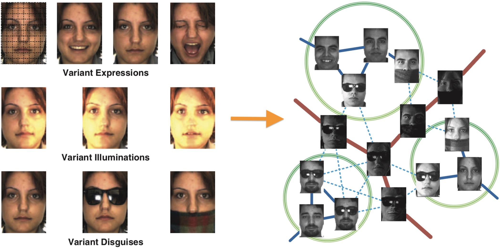
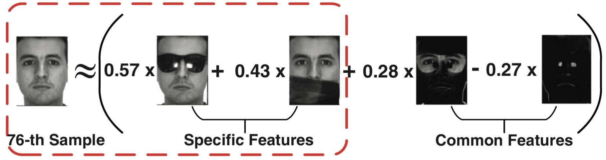
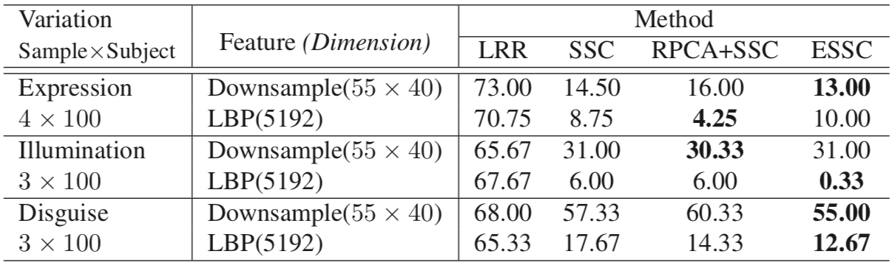
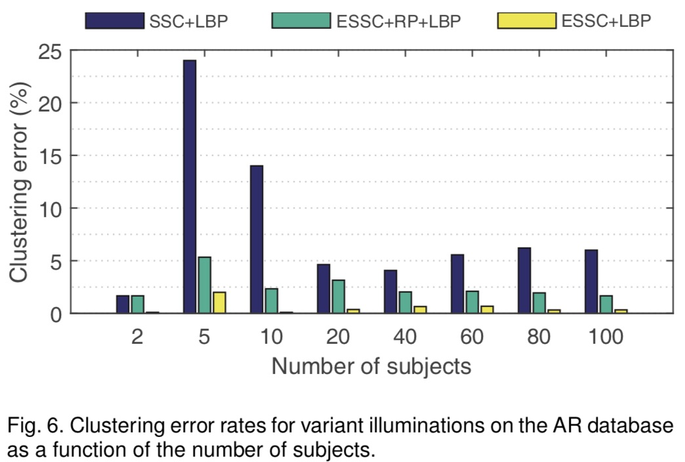
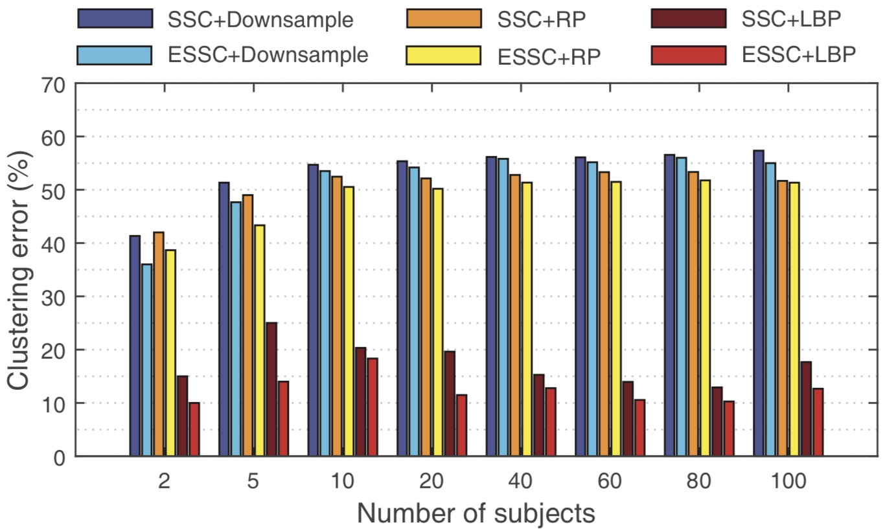
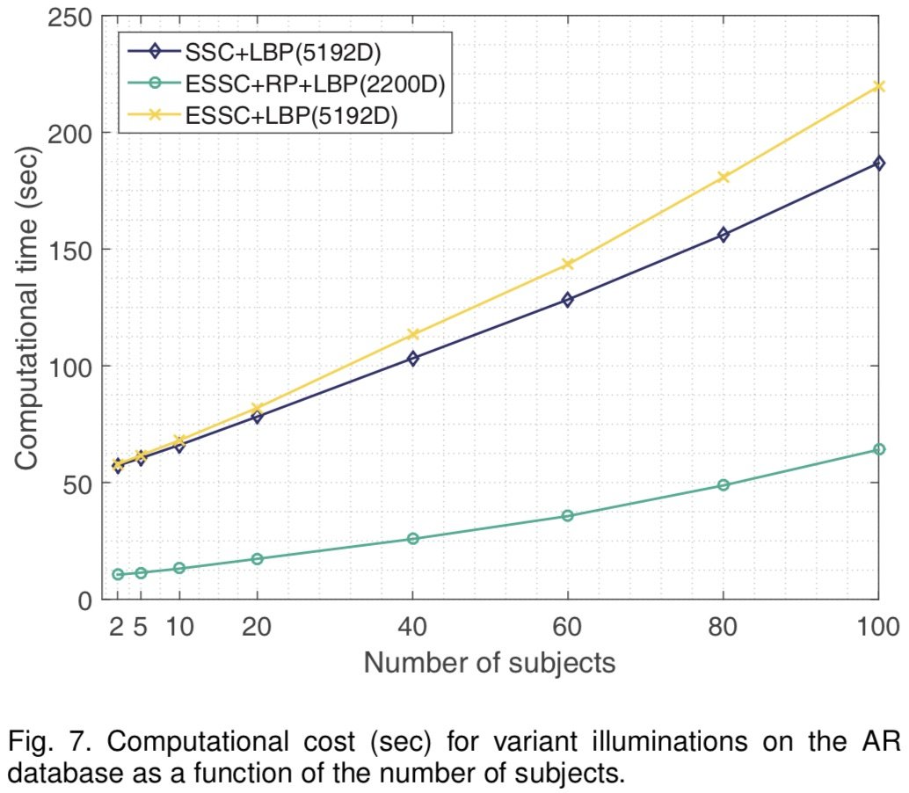

A Novel and Robust Face Clustering Method via Adaptive Difference Dictionary
Jiaxiang Ren Shengjie Zhao
Tongji University

Abstract
High-dimensional data is ubiquitous in machine learning, pattern recognition, image processing, computer vision, and bioinformatics. It causes “Curse of dimensionality”, which not only increases the cost but also introduces noise data. However, high-dimensional data is usually gathered in the low-dimensional subspaces. This property brings hope for us to solve the “dimensional curse” problem. This paper research on the sparse subspace clustering algorithm. The effectiveness of the proposed algorithm for complex noises is verified through experiments.
Multiple subspace clustering is one of the hot topics widely discussed in computer vision and image processing in the last decade. Subspace clustering is based on the underlying subspace structure of data. Sparse subspace clustering algorithm combined with compressive sensing theory is an effective approach to reconstruct the structure of high-dimensional data. It has become one of the most effective technologies to solve problems in the real world. The success is mainly due to the fact that data in practical applications comes from multiple subspaces. However, its performance degraded seriously when dealing with complex deformation. This paper comprehensively take the subspace structure into consideration, improving the clustering performance via removing the complex deformation. In terms of complexity of the algorithm, random projection is a good trade-off between high-precision and affordable cost, especially for high-dimensional facial images that are difficult to dissociate easily and are located at multiple subspace intersections. I also use a non-adaptive random Gaussian matrix to reduce the computation cost. The random matrix has low cost and good generalization.
In summary, by constructing an adaptive difference dictionary, the enhanced algorithm can better restore the structure of the underlying subspace and improve the accuracy. The randomized algorithm is optional to the adaptive difference dictionary, which can greatly increase the speed of calculation when degrades little performance. So it is suitable for environments with limited computing power. Finally, the direction of further work on the clustering algorithm is briefly discussed.
Key Words: Subspace Clustering, Sparse Representation, Randomized Algorithm, Face Clustering

Experiment Results

Error Rate(%) of Clustering Face Images with Variant Illuminations

Error Rate(%) of Clustering Face Images with Variant Disguises

Computational Cost (sec) for Variant Illuminations

Reference
[1] J. Ren, S. Zhao, K. Yang and B. Zhao, "A Novel and Robust Face Clustering Method via Adaptive Difference Dictionary," in IEEE International Conference on Multimedia & Expo Workshops, 2017.